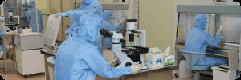
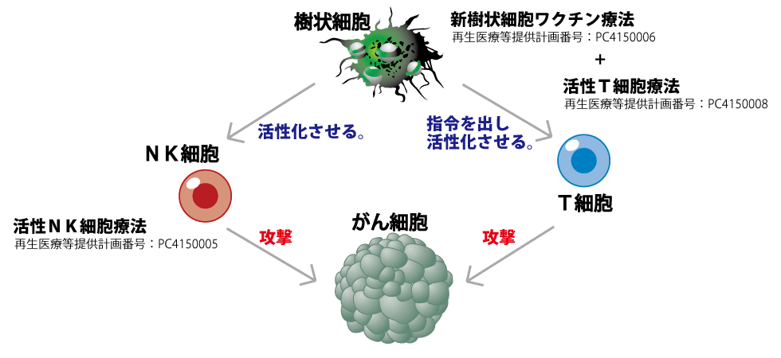

简体中文
简体中文


これまでのがん治療は、手術や放射線治療、抗がん剤治療などいわゆる三大治療が主ながん治療でした。しかし、これらの治療には副作用などのリスクを伴うものがほとんどでした。
そこで、近年第四の治療法として注目を集めているのが免疫細胞療法です。これまでのがん治療とは異なり、自己の免疫力を高めてがんを克服しようという治療法です。この治療は三大治療に比べ副作用が少ないのです。
患者様自身の免疫力を高める治療に我々の技術を提供させて頂きます。我々とともにがんを克服していきましょう。（がんの再発予防、がん予防の方も受けて頂く事が可能です）
そこで、近年第四の治療法として注目を集めているのが免疫細胞療法です。これまでのがん治療とは異なり、自己の免疫力を高めてがんを克服しようという治療法です。この治療は三大治療に比べ副作用が少ないのです。
患者様自身の免疫力を高める治療に我々の技術を提供させて頂きます。我々とともにがんを克服していきましょう。（がんの再発予防、がん予防の方も受けて頂く事が可能です）
免疫細胞療法は誰でも受けられるの？
免疫細胞療法には年齢制限は無く、誰でも受けられることのできる治療です。詳しくは当院までお電話ください。
他のクリニックとの違いは？

2002年に免疫細胞療法のクリニックを開業。19年目に入り数多くの患者様に治療をおこなってきました。無料個別医療相談を行っておりますので、是非一度お申し込みください。
ご相談だけでも受付しております
がん治療について
がん治療には、がんそのものを摘出してしまう手術、放射線を用いてがんを焼いて取り除く放射線治療、薬物を使用しがんの成長を妨げたり、がん細胞を破壊する抗がん剤治療などがあります。これらのがん治療は患者さんの体力面やがんの進行具合によって最適な治療を選択できる反面、大きなリスクを伴う治療でもあります。中には著しくＱＯＬ（生活の質）を低下させてしまう治療もあり患者さんにとって大きな苦痛を強いられるものでした。
そこで、登場したのが第四のがん治療、免疫細胞療法です。この免疫細胞療法は再生医療と言われる分野の治療法でiPS細胞と似た高度の技術を用いた新しいがん治療です。この新たながん治療「免疫細胞療法」は年齢や性別、がんの種類は問わず治療可能なのが特徴です。
そこで、登場したのが第四のがん治療、免疫細胞療法です。この免疫細胞療法は再生医療と言われる分野の治療法でiPS細胞と似た高度の技術を用いた新しいがん治療です。この新たながん治療「免疫細胞療法」は年齢や性別、がんの種類は問わず治療可能なのが特徴です。
がん免疫細胞療法について

名古屋メディカルクリニックのがん免疫細胞療法は、主にナチュラルキラー細胞を用いた活性ＮＫ細胞療法と、樹状（じゅじょう）細胞とＴ細胞を用いた新樹状細胞ワクチン療法+活性Ｔ細胞療法を行っていきます。これ以外にも患者さんの状態によってはガンマ・デルタＴ細胞治療も行うことになります。これらの免疫細胞治療には副作用がほとんど無いというのが特徴です。
メインとなるナチュラルキラー（ＮＫ）細胞は、血液中に存在する免疫細胞の主戦力となる細胞です。
ＮＫ細胞は体内に侵入してきたウイルスや体内で発生したがん細胞を自ら攻撃できる能力を備えています。このＮＫ細胞を、患者さんから採血により取り出して、元氣にして増やしたＮＫ細胞を投与する治療が活性ＮＫ細胞療法なのです。樹状細胞は免疫細胞の中でも司令塔の役割を果たす細胞です。
この細胞は直接がんを攻撃する事は無いのですが、がんを攻撃するＴ細胞やＮＫ細胞の働きを活性化させる作用があります。特に、樹状細胞とＴ細胞の関係には主従関係が存在しており、教育された樹状細胞を投与することで、免疫細胞全体の半数以上を占めるＴ細胞ががん細胞を攻撃するよう指令を受けるのです。名古屋メディカルクリニックの協力医療機関
名古屋メディカルクリニックの治療は複数の医療機関にて同じ治療が受けられます。各医療機関から再生医療等安全性確保法に基づく治療の提供計画を出して頂く事で実現しております。培養は当院の培養センターを使用する為、点滴やワクチンの品質が異なる事はありません。
名古屋メディカルクリニックでの治療は６回の投与で１クールとさせていただいております。活性ＮＫ細胞療法（１回分￥240,000）を６回行う治療の場合、１クールでおおよそ１４４万円の培養費用が発生致します。（がん予防の方は6回ではなく1年に1回～2回のみ受けている方も多くいます）ただ、当院では１クールまとめて費用を頂くのではなく、培養に入る回数毎で頂きます。治療の間隔は、標準のコースであれば約３か月程度で行いますが、院長との面談内容によっては約１か月半で１クールを行う場合もあります。
また、新樹状細胞ワクチン療法+活性Ｔ細胞療法を組み合わせた治療方法もございます。その場合、費用がかわりますので治療費用をご参考にしてください。
免疫細胞療法の治療効果はどれぐらい？
具体的な治療効果（確率）などはお伝えしておりません。仮に低い治療効果だとしても、1％でも希望があるのであれば受けて頂き、良い症例を患者さんに築いて欲しいと願っているからです。名古屋メディカルクリニックの免疫細胞療法は患者さんの「心のケア」も治療の一環であると考えています。少しでも患者さんの心の不安を取り除く事がとても重要であると思っておりますので、患者さんの精神的不安（特に治療効果）となる事はお伝えしないようにしております。
免疫細胞療法に保険は利くの？
現在、保険の適用はございません。当院の治療費は全て自費となります。「生命保険の先進医療特約に入っているのですが、使えますか？」と言う質問を頂きますが、当院では確認できませんので保険会社様へお問い合わせください。